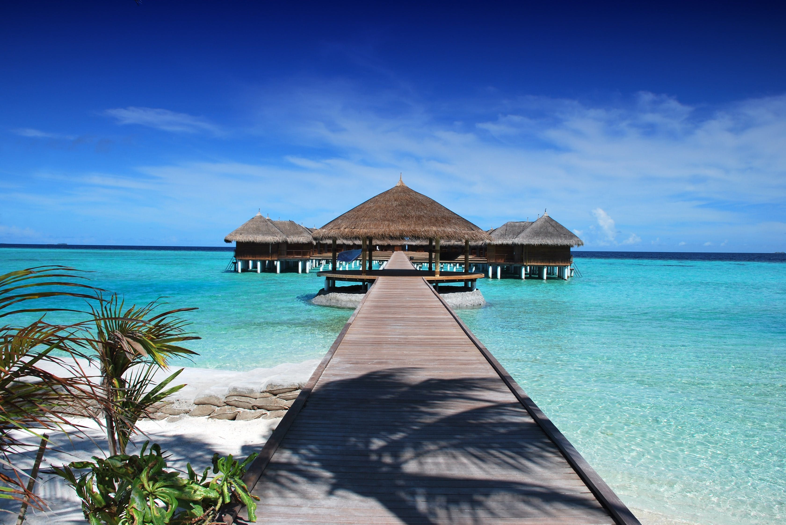

The Color Psychology of Blue
The Psychology of Blue

Colors are very important in our lives. Without them, our lives would be cheerless. From
the outfits to houses, cars, and surroundings, we care a lot about colors. Choices of colors are different, and everyone has their own choices and priority of colors. Nature has all the beautiful colors, and we are all surrounded by beautiful colors. Blue is a calm and relaxed color, and I like pale blue or sky blue the most, when I look at bright blue, I enjoy a lot and it makes me feel relaxed. For example, I wear a turquoise ring that is pale blue, and whenever I look at it, I feel relaxed. I always enjoy looking at it. I want to be surrounded by this color and it makes me feel calm and happy.
When I travel to places with oceans and beaches I swim in the ocean, I float in the water and look at the bright blue sky with beautiful clouds, in the summer water is body temperature. I feel more relax and freer of any sorrow, I stare at the beautiful clear sky while floating in the water and the good thing about the ocean is that you won't sink because water is heavy and salty. You don't have to swim but relax. The whole sphere of the earth is pale blue to my eyes, and it looks like that the whole world is surrounded by light blue skies and oceans. and it is the most enjoyable moment for me. But unfortunately, Colorado is surrounded by lands not by the ocean, otherwise anytime I would go to the beach for swimming.
Blue Is calming

"Blue color is known to have a calming effect on the psyche. It makes us feel more comfort, peace and relaxed. It is the color of the universe and nature such as sky, ocean and twilight" (Kendra).
For instance, when I was on Hawaii for vacation I used to go to the beach and lie there, looking at the beautiful sky and the ocean were looking the same as they are into each other, the sound of waves was too relaxing and enjoyable. And if I wanted a bit of relaxation, I used to float in the water and looked up at the cloudless sky with its bright blue color that made me feel happy and relaxed. I think waves and water is good for the psyche because most of the relaxation music are wave sounds and sounds of dropping water.
Moreover, "Blue color represents loyalty and peace" (Rikard). For example, when a person has a job interview, in order for him to be succeeded and prove his loyalty to the interviewer, he might wear a blue shirt or a blue suit. Flags of some countries and the united nations are blue to show peace and stability. Furthermore "Blue is the color that symbolizes strength, wisdom and trust" (PAN). Blue generally looks great and beautiful in any shades. From dark blue to light blue, it looks great and beautiful and honest. As a result, most of my attires and accessories are in blue, especially light blue (Car, phone, school bag, ring, etc.), and when I go shopping the first thing I seek or choose to buy should be in blue, if I was able to find my favorite outfit in blue color that’s ok otherwise, I will be looking among other colors or maybe simply leave the mall. Although this color helps me a lot to find my favorite attire, I am still a fussy shopper, and I have a very hard choice.
Blue Is Masculine Color
Blue is the color that is used mostly by men, because it is a masculine color and represents masculinity. And I feel masculine when I am around this color. Furthermore, it gives me deep relaxation and comfortability. I hung pictures and paintings of oceans with bright blue skies on the walls of my study room and whenever I feel tired, I look at them and they give me more comfort while seeing at them and my tiredness is completely gone in a few moments. I feel down in the winter season, especially when it is cloudy and snowing, because the sky is obscured by the clouds, and I am not able to see the beautiful blue sky. Furthermore, it gives me deep relaxation and comfortability. I hung pictures and paintings of oceans with bright blue skies on the walls of my study room and whenever I feel tired, I look at them and they give me more comfort while seeing at them and my tiredness is completely gone in a few moments. I feel down in the winter season, especially when it is cloudy and snowing, because the sky is obscured by the clouds, and I am not able to see the beautiful blue sky.
Mostly nature is surrounded by the blue color especially bright blue, such as a bright blue of a daytime sky, that’s why people describe this color as calm and serene. When people go to the beach to swim and see the beautiful ocean and sky, they feel calmer and more relaxed because of the effects of this color. This color is rare in fruits and vegetables, and there is only blueberry and that is the only fruit that is available in blue color. Interestingly, there are no blue vegetables available in nature.
Conclusively, blue is the color of flower Bluebell. It tastes like yummy blueberry. It sounds like the wind whistling in my ears. It feels like water in a lake splashing against my hands. It makes me feel warm and cozy. Above all, if you are inclined towards blue color, it shows that you are deliberate and introspective. You have cautious strong beliefs, retreat to gentler surroundings in time of stress, and sensitive to the feelings of others. If you are "Blue", you have a pleasant demeanor, you are a loyal friend, trust-worthy, and you lead a sober life.